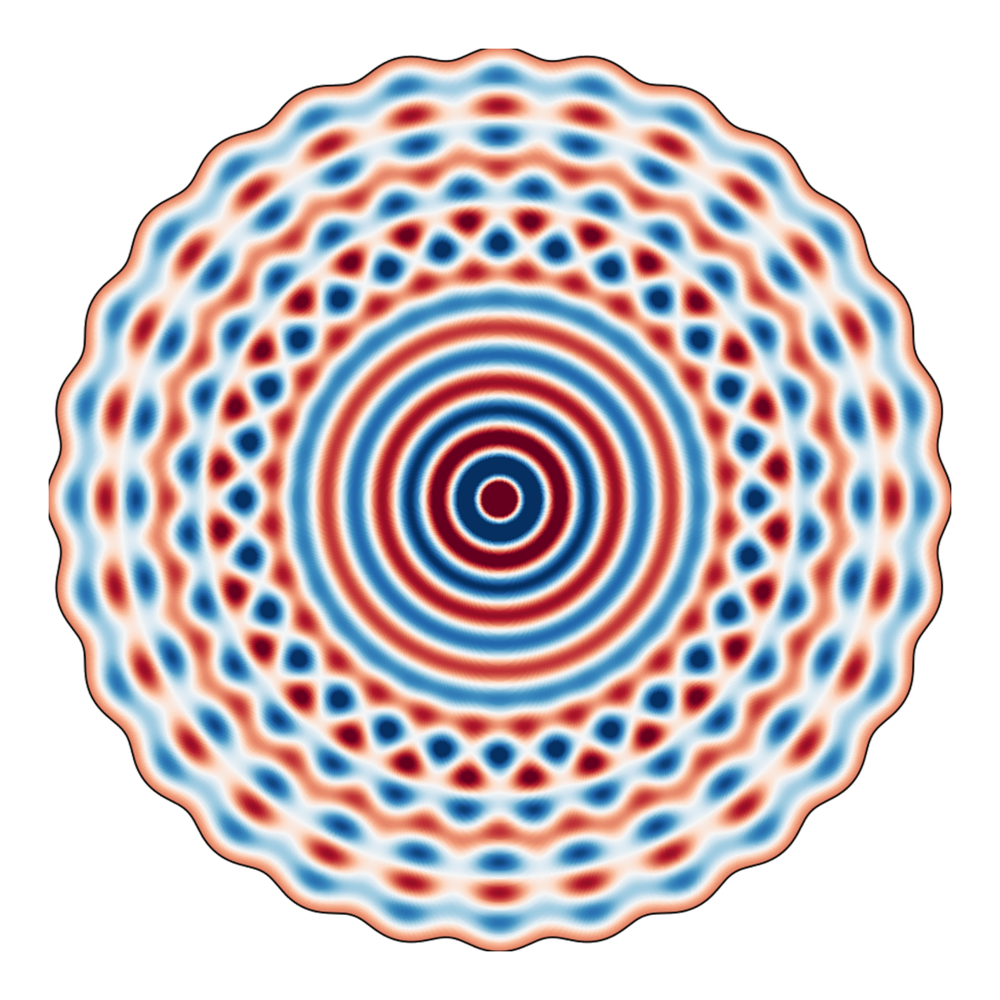
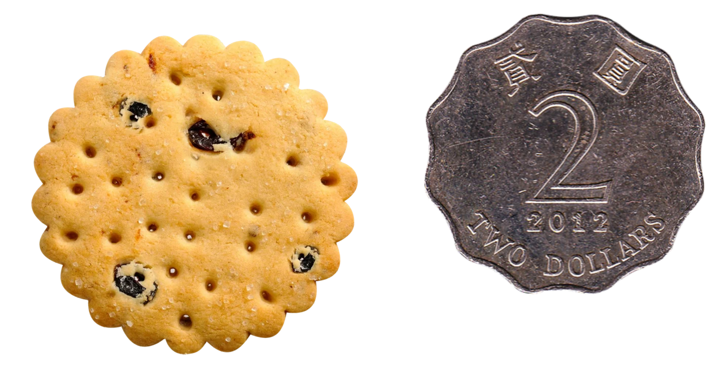

Paper edition · theorem statements, proofs, and interactive figures
A counterexample to Schiffer's conjecture
Abstract. Let \(\Omega\subset\mathbb R^2\) be a bounded domain. Pompeiu asked whether a function \(f\) is determined by its integrals over all rigid motions \(E(\Omega)\). Williams showed that nonuniqueness occurs exactly when \(\Omega\) supports a nonconstant Laplace eigenfunction whose value is constant and whose normal derivative vanishes on \(\partial\Omega\). The disk is the classical example, and Schiffer conjectured that it is the only connected smooth planar one.
We explain two ways to construct counterexamples. In the first, we search numerically for an almost-counterexample with extremely high precision, and then use a computer-assisted proof to show that an exact counterexample lies nearby. In the second, we begin with the bifurcating counterexamples on the flat cylinder constructed in 2023 by Fall, Minlend and Weth. We repeat the same boundary pattern periodically around a large disk. Cone quotients make this comparison precise: we temporarily allow the number of repetitions to be a real parameter, and vary it until the pattern closes to form an exact planar domain.
Pompeiu asked whether a function is determined by its averages.
In 1929 Dimitrie Pompeiu considered the following question: fix a bounded domain \(\Omega\subset\mathbb R^2\). Given a continuous function \(f\colon\mathbb R^2\to\mathbb R\), can we determine \(f\) from knowing the integrals of \(f\) on every rigid motion (translation and rotation) of \(\Omega\)?
If the answer to Pompeiu's question were to be false, we would have \(f_1\) and \(f_2\) different with the same integrals over any rigid motion of \(\Omega\), and therefore their difference would integrate to zero over any rigid motion of \(\Omega\). Thus, Pompeiu's question can be asked as: if \(\int_{\sigma(\Omega)}f(x)\,dx=0\) for every rigid motion \(\sigma\), is it necessarily true that \(f(x)=0\)?
A domain for which the answer is yes is said to have the Pompeiu property. Pompeiu's own proofs of the Pompeiu property for disks and squares did not stand: the disk proof was wrong outright, and the square proof needed the extra hypothesis that \(f\) tends to a limit at infinity. Christov later filled the square case, while Chakalov, in 1944, proved that disks fail to have the Pompeiu property: \(f(x)=\cos(\sqrt\lambda\,x_1)\) is a counterexample for a disk of radius \(r\) whenever \(\rho_\star=\sqrt\lambda\,r\) is a zero of the Bessel function \(J_1\). A disk has an evident loss of information because rotating it produces no new set. The Pompeiu conjecture asks whether disks are the only connected smooth planar domains without the Pompeiu property.
If connectedness is dropped, finite disjoint unions of congruent disks give immediate further counterexamples. We therefore restrict attention to connected smooth domains. Brown, Schreiber and Taylor proved that noncircular ellipses, polygonal regions, and compact convex sets with a corner have the Pompeiu property [5, Theorems 5.1 and 5.9, and Corollary 5.12].
\(\operatorname{Pompeiu}(\Omega)\)
Suppose that we know \(\int_{\sigma(\Omega)}f(x)\,dx\) for every rigid motion \(\sigma\). Can we determine \(f(x)\)?
If yes, we say that \(\Omega\) has the Pompeiu property.
Why does the disk fail the Pompeiu property?expand +
Let \(\Omega\) be a disk of radius \(r\), let \(\rho_\star\) be a positive zero of \(J_1\), and set \(\lambda=(\rho_\star/r)^2\) and \(f(x)=\cos(\sqrt\lambda\,x_1)\). For every translation vector \(t\in\mathbb R^2\),
Thus \(\mathbf 1_\Omega*f=0\), so \(f\not\equiv0\) has integral zero over every translate of the disk. Rotations produce the same disk, and therefore \(\Omega\) fails the Pompeiu property. □
Brown, Schreiber and Taylor proved, more generally, that this failure is equivalent to \(\widehat{\mathbf 1_\Omega}\) vanishing on a circle centred at the origin. The disk clearly does that, but the question of whether there is another connected smooth domain with that property remained open.
Move the disk
The colour is \(\cos(x_1)\), on the same scale the numerical figures use further down. Choose a radius, then drag the disk anywhere in the plane; the number below is its integral over the disk.
\(\int_{B_r(t)}\cos(x_1)\,dx\)0.000
drag the disk, or focus the panel and use the arrow keys
Schiffer asked a question regarding Neumann eigenfunctions of the Laplacian.
In elliptic PDE the traditional theory imposes either Dirichlet boundary conditions (the value of the unknown at the boundary) or Neumann boundary conditions (the normal derivative, or flux, at the boundary). Schiffer, in the 50s, wondered what happens if we impose both, that is, if we consider an overdetermined problem. He considered the problem below, which S. T. Yau later listed as Problem 80 in his 1982 collection of open problems in geometry.
Since the problem is overdetermined, it is reasonable to expect no solutions. However, disks do have solutions: any radially symmetric Neumann eigenfunction will do. Radial symmetry on a disk makes the boundary value constant, and we can rescale \(u\) to make that constant one.
Curiously enough, the radial solutions of \((\Delta+\lambda)u=0\) are given by \(J_0(\sqrt\lambda\,|x|)\), so they satisfy the Neumann condition if \(J_0'(\sqrt\lambda\,r)=0\). And \(J_0'\) is a multiple of \(J_1\), so disks solve the Schiffer problem exactly when \(\sqrt\lambda\,r=\rho_\star\), a zero of \(J_1\). This is the same condition we saw above for the Pompeiu problem. That seemingly innocent coincidence turns out to have a deeper reason: for bounded, simply connected, smooth domains the Pompeiu and Schiffer problems are equivalent. This was proved by Williams in 1976.
The Schiffer property implies failure of the Pompeiu propertyexpand +
Let \((u,\lambda)\) solve the Schiffer system on \(\Omega\), and let \(f\) be any solution of \(\Delta f+\lambda f=0\) on the whole plane (the plane wave \(f(x)=\cos(\sqrt\lambda\,x_1)\) will do). Fix a rigid motion \(\sigma\) and write \(\Omega_\sigma=\sigma(\Omega)\), \(u_\sigma=u\circ\sigma^{-1}\), which solves the same system on \(\Omega_\sigma\). Green's second identity reads
The left-hand side vanishes since \(\Delta f=-\lambda f\) and \(\Delta u_\sigma=-\lambda u_\sigma\) (because the Laplacian respects rigid motions). On the right-hand side the boundary conditions \(u_\sigma=1\) and \(\partial_\nu u_\sigma=0\) collapse the integrand to \(\partial_\nu f\). Hence
\[
0=\int_{\partial\Omega_\sigma}\partial_\nu f
=\int_{\Omega_\sigma}\Delta f
=-\lambda\int_{\Omega_\sigma}f,
\]
the middle step being the divergence theorem. Since \(\lambda>0\), the integral of \(f\) over \(\Omega_\sigma\) is zero, and \(\sigma\) was arbitrary. The plane wave is a Pompeiu counterexample for \(\Omega\). □
Failure of the Pompeiu property implies the Schiffer propertyexpand +
Suppose \(\Omega\) fails the Pompeiu property, witnessed by some \(f\not\equiv0\). Run the convolution argument above on each rotated copy \(\sigma(\Omega)\), with \(\sigma\) a rotation about the origin, and use \(\widehat{\mathbf 1_{\sigma(\Omega)}}(\xi)=\widehat{\mathbf 1_{\Omega}}(\sigma^{-1}\xi)\). Picking any \(\xi_0\) in the support of \(\widehat f\) and letting \(\sigma\) run over all rotations shows that \(\widehat{\mathbf 1_\Omega}\) vanishes on the entire circle \(|\xi|=|\xi_0|\), and that circle is not a point since \(\widehat{\mathbf 1_\Omega}(0)=|\Omega|>0\).
Now, take \(\lambda=|\xi_0|^2\). Since \(\widehat{\mathbf 1_\Omega}\) vanishes at \(|\xi|^2=\lambda\), we divide it by \((\lambda-|\xi|^2)\), which is the Fourier symbol of \(\Delta+\lambda\). Consider1
We have that \(v\) solves \((\Delta+\lambda)v=1\) inside \(\Omega\) and \((\Delta+\lambda)v=0\) outside. The regularity of \(v\) in Fourier1 implies that it decays in physical space. Together with \((\Delta+\lambda)v=0\), this allows us to propagate \(v=0\) from infinity to the exterior of \(\Omega\) (recall here that \(\Omega\) is simply connected). Thus, \(v\) is compactly supported in \(\overline\Omega\), and satisfies \((\Delta+\lambda)v=1\). The decay of \(v\) in Fourier space tells us that \(v\) is \(C^1\), so that \(v|_{\partial\Omega}=0\) and \(\partial_\nu v|_{\partial\Omega}=0\).
Lastly, considering \(u=1-\lambda v\), we see that it satisfies \((\Delta+\lambda)u=0\), as well as \(u|_{\partial\Omega}=1\) and \(\partial_\nu u|_{\partial\Omega}=0\). It is not constant, since a constant solution of \((\Delta+\lambda)u=0\) with \(\lambda>0\) vanishes identically. □
1 Vanishing on a real circle does not by itself make the quotient harmless. Since \(\Omega\) is bounded, \(\widehat{\mathbf 1_\Omega}\) extends to an entire function of \(\xi\in\mathbb C^2\), and what the division really needs is that it vanish on the complex quadric \(\xi\cdot\xi=\lambda\). Supplying that, and quantifying the decay of \(\widehat v\) that makes \(v\) a \(C^1\) function and licenses the propagation from infinity, is the technical content of Williams' argument, and is where the smoothness of \(\partial\Omega\) is used.
Linear rigidity of the disk counterexample.
One reason to expect Schiffer's conjecture to hold is that the disk is rigid at the formal, infinitesimal level: every linearized deformation through Schiffer solutions comes from a translation or a dilation, and therefore produces no nearby noncircular domain.
Consider \(\Omega,u,\lambda\) solving the Schiffer problem, and suppose we have another solution close by, with eigenfunction \(u+\delta u\) and domain \(\Omega+\delta\Omega\,\nu\), where \(\delta\Omega\colon\partial\Omega\to\mathbb R\) measures the small perturbation in the normal direction.
The normal perturbation
The perturbed domain \(\Omega+\delta\Omega\,\nu\) is obtained by pushing every boundary point \(p\) along the outward normal by \(\delta\Omega(p)\). Only that normal motion changes the domain to first order; sliding the boundary along itself merely relabels its points.
\(p\longmapsto p+\delta\Omega\,\nu\)→
Writing \(\Omega'=\Omega+\delta\Omega\,\nu\) for the perturbed domain. Positive \(\delta\Omega\) moves the boundary outward and negative \(\delta\Omega\) moves it inward.
Then, if we impose that \((u+\delta u,\ \Omega+\delta\Omega\,\nu)\) also solves Schiffer, at the linear level we read:
The crucial observation now is that the first two equations tell us that \(\delta u\) is a Dirichlet eigenfunction of the Laplacian, with the same eigenvalue \(\lambda\). Then, one can solve the third equation for \(\delta\Omega\), which actually simplifies from a small computation showing \(\partial_\nu^2u|_{\partial\Omega}=-\lambda\).
This approach has been used in overdetermined problems. Unfortunately, the only planar Schiffer examples we know are balls, and there Siegel proved that there is no agreement of Neumann and Dirichlet eigenvalues, blocking the route described above.
Perturbation
Suppose a Schiffer example \((u,\Omega)\), so in particular \(u\) is a Neumann eigenfunction of the Laplacian with eigenvalue \(\lambda\). We can perturb that solution if \(\lambda\) is also a Dirichlet eigenvalue.
In that case its eigenfunction \(\delta u\) is the corresponding perturbation of \(u\), and \(\Omega\) is perturbed by \(\partial_\nu\delta u/\lambda\).
Deriving the linearized problem, and its trivial solutionsexpand +
The expansion. Impose the Schiffer system on the perturbed pair. The interior equation is already linear in \(u+\delta u\). The two boundary conditions are imposed on \(\partial\Omega'\), whose points are \(p+\delta\Omega(p)\,\nu(p)\) with \(p\in\partial\Omega\), so reading them back on \(\partial\Omega\) costs one Taylor step along the normal:
where l.o. collects everything at least quadratic in \((\delta u,\delta\Omega)\). Now we use that \((u,\Omega)\) already solves the problem. On the second line \(u|_{\partial\Omega}=1\) cancels the right hand side and \(\partial_\nu u|_{\partial\Omega}=0\) kills the term carrying \(\delta\Omega\), leaving \(\delta u|_{\partial\Omega}=0\); on the third line the same Neumann condition removes the first term. Discarding l.o. gives the linearized system above.
The small computation. At a boundary point, split the Laplacian into its normal, mean-curvature and tangential parts,
The Neumann condition \(\partial_\nu u=0\) kills the second term, and \(u\equiv1\) on \(\partial\Omega\) kills the third. Hence \(\partial_\nu^2u=\Delta u=-\lambda u=-\lambda\) there, and the third linearized equation reads \(-\lambda\,\delta\Omega+\partial_\nu\delta u=0\), that is, \(\delta\Omega=\partial_\nu\delta u/\lambda\).
The trivial solutions. The linearized system always has solutions that carry no information, because the Schiffer problem is blind to rigid motions and to scaling. Take for \(\Omega\) the unit disk \(D\), with \(u_0(r)=J_0(\rho r)/J_0(\rho)\) and \(\lambda=\rho^2\), where \(J_1(\rho)=0\). Translating gives an exact family of solutions, \(\Omega_t=D+ta\) with \(u_t(x)=u_0(x-ta)\) and \(\lambda_t=\rho^2\); differentiating it at \(t=0\) produces
Dilating gives another one, \(\Omega_t=(1+ct)D\) with \(u_t(x)=u_0\!\left(x/(1+ct)\right)\) and \(\lambda_t=\rho^2/(1+ct)^2\), whose normal velocity is the constant \(\delta\Omega(\theta)=c\); here the eigenvalue has to move, because the Laplacian scales like the inverse of a length squared. Rotating contributes nothing at all: the velocity is tangent to the circle, so \(\delta\Omega=0\).
A genuinely new Schiffer domain must therefore produce a \(\delta\Omega\) outside the span of \(\{1,\cos\theta,\sin\theta\}\), and near a disk there is none. Expanding \(\delta u\) in angular modes, the mode \(\ell\) survives only if \(J_\ell(\rho)=0\) on top of \(J_1(\rho)=0\), and the Bourget–Siegel theorem says that two Bessel functions of distinct integer order share no positive zero. So every \(\ell\ge2\) dies, \(\ell=1\) is a translation and \(\ell=0\) is a dilation: the disk is rigid, and this is the obstruction Siegel's theorem provides. □
A Schiffer domain is a critical point of a Neumann eigenvalue.
There is a second way to read the same boundary condition, which shows it is not an accident of the equations: it is exactly a criticality condition. Fix a smooth bounded \(\Omega\) with connected boundary, a simple Neumann eigenvalue \(\mu>0\), and its eigenfunction \(u\) normalized by \(\int_\Omega u^2=1\). Deform \(\Omega\) while keeping its area fixed. Then \(\mu\) is stationary under every such deformation precisely when \(u\) is constant on \(\partial\Omega\) (which is the Schiffer system above). Schiffer domains are the critical points of a Neumann eigenvalue under a volume constraint, and Schiffer's question asks whether the disk is the only one.
Why the boundary condition is a criticality conditionexpand +
Deform with normal velocity \(f=V\cdot\nu\) on \(\partial\Omega\). The Hadamard formula for a simple Neumann eigenvalue is
On \(\partial\Omega\) the Neumann condition \(\partial_\nu u=0\) leaves only the tangential part of the gradient, and if \(u\equiv c\) on the boundary then that part vanishes too. What is left is
which is zero for every area-preserving deformation. The constant \(c\) is not zero: if it were, \(u\) and \(\partial_\nu u\) would both vanish on \(\partial\Omega\) and unique continuation would force \(u\equiv0\). □
The converse needs one more step. Criticality under the area constraint gives the Lagrange condition \(|\nabla u|^2-\mu u^2=\text{const}\) on \(\partial\Omega\), which looks weaker; Fall and Weth show that any nontrivial solution of it has \(u^2\) constant on the boundary, so on a connected boundary \(u\) itself is constant. Simplicity of \(\mu\) is not a technicality here. The ball in \(\mathbb R^n\) maximizes the first nonzero Neumann eigenvalue at fixed volume, so it is certainly critical, yet that eigenvalue has multiplicity \(n\) and none of its eigenfunctions is constant on the sphere.
Everything after this is a way of arranging the coincidence somewhere else. On the flat cylinder and on the sphere the two spectra do meet, which is section 03; sections 04 and 05 transport that meeting back to the plane through cone quotients, where the integer order is relaxed to a real parameter and then tuned until it lands back on an integer.
A planar counterexample
One noncircular Schiffer domain and its eigenfunction.
The bifurcation argument produces bounded, simply connected, noncircular domains with real-analytic boundary. The first panel shows one member of this family, chosen with 28-fold rotational symmetry: the black curve is \(\partial\Omega\), and the colour field is the corresponding eigenfunction \(u\). The other panels compare its repeated boundary undulations with two familiar shapes. That comparison is geometric only; no spectral property is asserted for the coin or the biscuit.

One counterexample
This representative has 28-fold rotational symmetry. The colours show its associated Schiffer eigenfunction.

A Hong Kong two-dollar coin
A twelve-scalloped circulating coin, first issued in 1975.
A fluted biscuit
A similar periodic boundary profile, with a larger relative amplitude.
The primary audience is mathematicians who know elliptic partial differential equations but have not read the underlying paper. Each section states its purpose before introducing notation.
The theorem statements and displayed computations form a continuous proof sketch. Expandable panels contain longer derivations. The figures illustrate the same quantities used in the argument.
The writing follows the core, technical-writing, and document-design guidance in the ISO 24495 plain-language skills project. That project is an unofficial interpretation of the standards and does not claim ISO conformance.
03
Two model geometries
Bifurcation on the cylinder and sphere
The linearization in the introduction tells us what to look for: a radial Schiffer eigenvalue that is also a nonradial Dirichlet eigenvalue. The Bourget–Siegel theorem rules this out on a disk. It does occur on the flat cylinder and on the sphere, and in both geometries the resulting linearized kernel produces genuine nonradial Schiffer branches. The figures below vary the branch parameter \(s\) slowly, beginning at the symmetric domain \(s=0\).
flat cylinder
A radial Neumann mode and a nonradial Dirichlet mode have the same eigenvalue.
On the half-cylinder \(x\le0\), separation of variables gives, for every \(\lambda>1\),
At \(x=0\), the first wave has Neumann data and the second has Dirichlet data. Consequently, this spectral coincidence holds for every \(\lambda>1\) on the half-cylinder. For \(1<\lambda<4\), every higher channel \(k\ge2\) is evanescent. Fall, Minlend and Weth obtain the corresponding nonlinear bifurcations on compact flat cylinders; the half-cylinder version used below follows from the same separated equations and weighted-space argument.
Cao-Labora and Fernández find a transverse intersection of a zonal Neumann branch and a nonzonal Dirichlet branch. This intersection produces smooth contractible Schiffer domains on the hemisphere.
The flexibility comes from a precise coincidence of special functions. Separation of variables produces a radial or zonal family satisfying the Neumann condition and a nonradial family satisfying the Dirichlet condition. A bifurcation becomes possible when the two families have the same eigenvalue: trigonometric waves on the cylinder, associated Legendre functions on the sphere, and, later, Bessel functions on the cone. The disk is rigid precisely because the corresponding Bessel coincidence is forbidden.
04
The geometric limit
From rotational sectors to a half-cylinder
\(\mathbb R^2/C_N\)\(g_R=dr^2+(r^2/R^2)d\psi^2\)\(R=N\) only at the planar lift
The quotient of an \(N\)-fold domain approaches a half-cylinder.
We seek a noncircular planar Schiffer domain with \(N\)-fold rotational symmetry, for a large integer \(N\). Quotienting by the rotations and rescaling the angular coordinate to have period \(2\pi\) gives a cone with parameter \(R=N\). As \(N\to\infty\), the distance from the boundary to the cone point tends to infinity, and every fixed boundary collar converges to the half-cylinder \(({-\infty},0]\times S^1\). The figure displays the quotient construction, the half-cylinder limit, the bifurcation on the cone, and the lift back to the plane.
the field is repeated in \(N\) sectorsthe same quotient sector throughout · numerical final boundary
Subsection 5.1 constructs the limiting branch.The half-cylinder problem has a nontrivial branch for every \(2\leq\lambda\leq3\), with one common amplitude interval.
Subsection 5.2 transfers the branch to cones.Uniform Debye estimates compare the cone and cylinder operators on a fixed boundary collar.
Subsection 5.3 computes the direction.The cone order satisfies \(R''(0)<0\), with a crossing-independent lower bound on the resulting decrease.
Subsection 5.4 identifies the endpoint.When the real cone order reaches an integer \(N\), the quotient unfolds into an \(N\)-fold planar domain.
Subsection 5.5 supplies the starting point.Common Bessel zeros occur closer to integers than the uniform decrease from Subsection 5.3.
5.1 · the limiting half-cylinder
A branch on the half-cylinder, uniform in \(\lambda\)
For every \(\lambda\in[2,3]\), the flat cylinder has a nontrivial Schiffer branch. The same interval in the branch parameter \(s\) works throughout this spectral window.
5.1.1 · separation of variables
The kernel of the linearized problem is explicit.
Let \(\mathcal C_-=(-\infty,0]\times S^1\) and \(\Delta=\partial_x^2+\partial_\theta^2\). The undeformed Schiffer solution is independent of \(\theta\). By the linearization above, a first-order deformation of the boundary must come from a nonradial Dirichlet solution at the same eigenvalue. Separation of variables gives the two functions below.
Therefore \(f(\theta)=\cos\theta\) corresponds to \(v=\lambda v_1/\sqrt{\lambda-1}\). This is exactly the first-order term in Theorem 5.1.
Existence of the nonlinear branch.
Fall, Minlend and Weth prove the corresponding bifurcation theorem for compact flat cylinders. The same separated-mode argument applies to the half-cylinder, with boundedness as \(x\to-\infty\) replacing the second boundary condition. For \(2\leq\lambda\leq3\), the complementary Fourier modes have inverse bounds independent of \(\lambda\). See Fall–Minlend–Weth, The Schiffer problem on the cylinder and on the 2-sphere.
Theorem 5.1uniform half-cylinder branch
Fix \(0<\alpha<1\). There is an \(\varepsilon>0\) and a \(C^3\) family \((\Omega_{\lambda,s},u_{\lambda,s})\), indexed by \((\lambda,s)\in[2,3]\times(-\varepsilon,\varepsilon)\), such that \(\Omega_{\lambda,s}=\{(x,\theta):x<h_{\lambda,s}(\theta)\}\) for some \(h_{\lambda,s}\in C^{2,\alpha}(S^1)\), and
Use rotation in \(\theta\) to choose the cosine direction, axial translation to impose \(\int_{S^1}h_{\lambda,s}=0\), and the first Fourier coefficient of \(h_{\lambda,s}\) as the branch parameter \(s\). In this gauge, put \(\beta=\sqrt{\lambda-1}\) and \(\alpha_2=\sqrt{4-\lambda}\). Then the boundary and field have the forced expansion
The quadratic term \(\cos^2\theta=\tfrac12(1+\cos2\theta)\) produces a second harmonic. Its bounded cylinder profile is \(e^{\sqrt{4-\lambda}\,x}\), so the coefficient of \(\cos2\theta\) in the boundary graph is \(-\tfrac14\sqrt{4-\lambda}\). In the cone calculation, the exponential derivative is replaced by the corresponding Bessel logarithmic derivative, whose large-radius limit is \(\sqrt{4-\lambda}\).
The remainders are uniform in \(\lambda\in[2,3]\) on every fixed boundary collar. For this range of \(\lambda\), the first angular mode is oscillatory and every mode \(k\ge2\) has the bounded profile \(e^{\sqrt{k^2-\lambda}\,x}\) as \(x\to-\infty\).
Proof sketch of Theorem 5.1: why the interval is uniform in \(\lambda\)expand +
The quantitative point
The complementary linearized operator has one inverse bound for every \(2\leq\lambda\leq3\).
Fixing the first boundary coefficient as \(s\) removes the kernel coordinate. The remaining boundary equations can then be solved by a uniform implicit-function theorem.
This is the Lyapunov–Schmidt form of the Crandall–Rabinowitz argument. The half-cylinder has a kernel for every \(\lambda\) in the interval, so no separate crossing parameter is required.
Formal computation of the uniform bounds
Separate the propagating modes from the decaying modes.
Put \(q=\sqrt\lambda\), \(\beta=\sqrt{\lambda-1}\), and \(\alpha_k=\sqrt{k^2-\lambda}\) for \(k\geq2\). An even bounded solution has the form
Normalize \(A_0^{\mathrm c}=1\), and write \(h(\theta)=s\cos\theta+\sum_{k\geq2}B_k\cos(k\theta)\). The unknown constant boundary value is denoted by \(c\).
At \((h,u,c)=(0,\cos(qx),1)\), the linearized Dirichlet and Neumann residuals split into the following Fourier blocks:
The prescribed coefficient \(s\) contributes \(-\lambda s\cos\theta\) to the first-mode Neumann residual. Hence \(A_1^{\mathrm s}=\lambda s/\beta\) at first order.
The compact interval \([2,3]\) gives the explicit bounds
Every displayed block is therefore invertible with the same bound in the weighted Fourier norms. The factor \(\alpha_k\asymp k\) supplies the derivative required by the boundary graph.
Let \(M\) bound these inverses. The nonlinear boundary map satisfies, on one fixed ball,
where \(C\) is independent of \(\lambda\). Choosing \(|s|+\|z\|<(2MC)^{-1}\) makes the Newton map a contraction. This choice gives one branch interval for the whole spectral window.
Proof argument in Banach spacesexpand +
Proof. Work in the even angular class. Use a weighted Wiener space for the Fourier coefficients and include the radial derivatives in the norm. This space is a Banach algebra, so composition with the graph \(x=h(\theta)\) is smooth for small \(h\).
Represent every bounded field by the separated expansion above. The four coefficients in the modes \(k=0,1\) describe the propagating phases. The sequence \((C_k)_{k\geq2}\) describes the decaying tower. This representation solves \((\Delta+\lambda)u=0\) exactly.
Define \(\mathcal F(\lambda,s,z)\) as the two boundary residuals
The second component is the Neumann condition multiplied by the positive graph-normal factor. Products and composition preserve the chosen spaces. Thus \(\mathcal F\) is \(C^4\) on a ball whose size is independent of \(\lambda\in[2,3]\).
The block computation proves that \(L_\lambda=D_z\mathcal F(\lambda,0,0)\) is an isomorphism. It also gives \(\sup_{\lambda\in[2,3]}\|L_\lambda^{-1}\|\leq M\). Equivalently, the full linearization has the one-dimensional kernel generated by
and prescribing the first coefficient of \(h\) selects its coordinate. This is the Lyapunov–Schmidt splitting used in the Crandall–Rabinowitz theorem.
Apply the quantitative implicit-function theorem to \(\mathcal F(\lambda,s,z)=0\). The common inverse bound and common \(C^4\) bound produce numbers \(\varepsilon,r>0\) that are independent of \(\lambda\). They give a unique solution \(z=z(\lambda,s)\) for \(|s|<\varepsilon\).
The reconstruction gives \(h_{\lambda,s}\) and \(u_{\lambda,s}\). Smooth dependence on \((\lambda,s)\) follows by differentiating the fixed-point equation. Half-turn symmetry gives \(h_{\lambda,-s}(\theta)=h_{\lambda,s}(\theta+\pi)\). The branch is nontrivial because its first boundary coefficient equals \(s\). □
Derivation of the first- and second-order termsexpand +
Proof of the expansion
Assume the branch supplied by Theorem 5.1 and fix \(\lambda\in[2,3]\). Expanding the equation and the two boundary conditions determines its two-jet as follows.
We choose the even direction \(f=\cos\theta\). The conditions \(\int h_s=0\) and \([\cos\theta]h_s=s\) remove axial translation and reparametrization of the branch.
2 / First order
Taylor expansion of \(u_s(h_s(\theta),\theta)=1\) and of the Neumann condition gives
For a graph boundary, \(\partial_\nu u=0\) is equivalent to \(u_x-h_s' u_\theta=0\). Here \(u_0'''(0)=v_{xx}(0,\theta)=v_\theta(0,\theta)=0\), so its quadratic part reduces to
\[
\partial_xw(0,\theta)=\lambda g(\theta).
\]
4 / Solve the two forced modes
The interior equation is \((\Delta+\lambda)w=0\). Only modes \(0\) and \(2\) occur, and boundedness at the infinite end gives
The zero-mean gauge removes the sine solution in the radial channel, while the amplitude gauge removes a homogeneous first harmonic. Finally, \(g=\lambda^{-1}w_x(0,\cdot)\), hence
The applet below computes a finite Fourier approximation to the family in Theorem 5.1. For each \((\lambda,s)\in[2,3]\times[-0.85,0.85]\), it solves simultaneously for the boundary graph and the Helmholtz field. The flat and three-dimensional panels display the same numerical solution in two coordinate systems.
trivial cylinder at the branch origin
−1+1
loading 3D renderer…
sixteen displayed units · continues toward \(x\to-\infty\) · drag to rotate · scroll to zoom
solving boundary + field…
Finite-dimensional solve
The boundary and the eigenfunction are solved simultaneously.
Every retained field mode solves the Helmholtz equation exactly. A nonlinear least-squares step determines its coefficients together with the boundary corrections \(h_2\cos 2(\theta-\phi)\) and \(h_3\cos 3(\theta-\phi)\).
The smallest candidate found in the search below order \(100\) has \(R_*=28.026397\ldots\). At this value, twenty-eight copies leave a narrow angular gap. Along the computed branch, \(R\) decreases to \(28\); at that value the copies fit exactly and define a planar domain.
The cone metric \(g_R=dr^2+(r^2/R^2)d\psi^2\) and its regular separated modes \(J_{kR}\) are defined for every real \(R>0\). A planar \(N\)-fold quotient is obtained at an integer value \(R=N\), when the cone is unfolded into the plane.
Theorem 5.2uniform cone bifurcation
There are constants \(R_{\mathrm{unif}},s_*,C_3>0\) such that every sufficiently large real crossing
The theorem applies to every sufficiently large real crossing. At any individual smaller simple crossing, the usual local bifurcation theorem gives a branch whose interval may depend on that crossing. For large \(R_*\), a fixed boundary collar converges to the half-cylinder of Theorem 5.1, which gives estimates uniform in \(R_*\). The finitely many crossings in a bounded range of \(R_*\) are handled separately.
Proof sketch of Theorem 5.2: uniform Crandall–Rabinowitz on the conesexpand +
Three estimates with crossing-independent constants
The cone map has a uniform chart, a uniform complement inverse, and uniform transversality.
A classical local theorem gives a branch at one simple crossing. The following estimates give the same branch interval at every sufficiently large crossing with \(2\leq\lambda_*\leq3\).
1 / nonlinear map
One fixed collar gives one \(C^4\) bound.
Straighten the moving boundary on a collar \(0\leq y\leq L\), and match the field at \(y=L\) to the regular Bessel tail. The resulting map \(\mathcal G_c(R,v)\) satisfies
The constants \(L,r,B\) are independent of the crossing \(c=(R_*,\rho,m)\).
2 / linearized inverse
Only the first angular mode is resonant.
Let \(L_c=D_v\mathcal G_c(R_*,0)\). Normalize its kernel vector \(K_c\) by the first boundary coefficient. There are functionals \(a_c\) and \(\ell_c\) such that
\[
X=\operatorname{span}\{K_c\}\oplus\ker a_c,\qquad
Y=\operatorname{range}L_c\oplus\operatorname{span}\{y_c\},
\]
\[
\left\|\left(L_c\big|_{\ker a_c}\right)^{-1}\right\|\leq M.
\]
For large angular mode \(k\), the radial potential is comparable with \(k^2\), and the regular-tail Robin coefficient is comparable with \(k\). These coercive estimates give one constant \(M\).
3 / crossing derivative
The first-mode crossing is uniformly transverse.
Keep \(\rho\) fixed while differentiating in \(R\). A Wronskian calculation gives
Its absolute value is therefore bounded below by one positive constant \(\tau\) for all sufficiently large crossings.
Lyapunov–Schmidt proof of the uniform branchexpand +
Proof. Write \(v=aK_c+w\) with \(w\in\ker a_c\). Let \(Q_c\) project onto \(\operatorname{range}L_c=\ker\ell_c\). The range equation is
\[
Q_c\mathcal G_c(R,aK_c+w)=0.
\]
Apply the contraction theorem with the complement inverse. The common bounds \(B\) and \(M\) give a unique solution \(w=W_c(R,a)\) on one rectangle \(|R-R_*|<\delta\), \(|a|<a_*\). They also give common derivative bounds through order four.
The lower bound \(|\partial_RH_c(R_*,0)|\geq\tau\) allows the scalar implicit-function theorem on a rectangle independent of \(c\). It produces \(R=R_c(a)\) and uniform \(C^3\) bounds.
Half-turn symmetry sends \(a\) to \(-a\). Uniqueness gives \(R_c(-a)=R_c(a)\), so \(R_c'(0)=0\). The first boundary coefficient is \(a+O(a^3)\), which proves that every branch point with \(a\neq0\) is nontrivial. □
The exact cone-map, complement-inverse, and transversality estimates are the quantitative inputs. The displayed Debye formula supplies their uniformity over the spectral window.
Let the cone have boundary radius \(r_0\) and metric \(dr^2+(r^2/r_0^2)d\psi^2\). At a crossing the boundary radius and the Bessel order are the same number: there \(\lambda=\rho^2/R^2\), and the boundary sits at \(\sqrt\lambda\,r_0=\rho\), so \(r_0=\rho/\sqrt\lambda=R\). That is why one letter serves for both. After separating the angular variable, the cone and half-cylinder have the bases below. The assertion is local: in the coordinate \(x=r-r_0\), the coefficients of the cone radial equation converge on every fixed interval to the constant coefficients of the cylinder equation as \(r_0\to\infty\).
Regularity at \(r=0\) selects \(J_{kr_0}\) and rejects \(Y_{kr_0}\). There is no modified-Bessel replacement: \(I\) and \(K\) solve the equation with the opposite spectral sign.
Thus changing \(r_0\) translates the local wave by the explicit phase rate \(d\xi/dr_0=\Phi(\sqrt\lambda)\). For the higher channels, the nonoscillatory Debye formula gives
The last limit is the exponential regime of the same expansion, DLMF (10.19.3) ↗, applied with order \(kr_0\) and argument-to-order ratio \(\sqrt\lambda/k<1\).
02 / cylinder\(u_1^{\mathrm{cyl}}\)03 / one planar sector\(u_1^{\mathrm{cone}}\)04 / complete planar fieldangular order 28
Each colored field is a single selected separated eigenfunction. Under the collar identification \(\theta=\psi\), Panels 02 and 03 use the same coordinates and the same color scale. Panel 03 evaluates the exact regular Bessel profile; Panel 02 uses the cylinder mode with the same boundary data. The cyan frame and guide lines in Panel 04 identify the sector enlarged in Panel 03.
What happens to sine and cosine?
Let \(\vartheta\) be the planar polar angle. On one \(N\)-fold sector, the rescaled quotient coordinate is \(\psi=N\vartheta\in S^1\). Consequently
The sine/cosine pair gives the dependence on the periodic cylinder coordinate. More precisely, \(A\cos(k\psi)+B\sin(k\psi)=C\cos(k\psi-\phi)\), so this two-dimensional freedom is the choice of phase, or equivalently the origin of \(\psi\) around the cylinder. This is the angular phase; it is separate from the radial Bessel phase controlled by \(r_0\).
three radial channels on \([r_0-5,r_0]\)
exact regular Bessel modematching cylinder mode
Cauchy-matched oscillatory profilesThe cylinder comparison has an \(r_0\)-dependent phase.
A fixed cosine would impose \(f(0)=1\) and \(f'(0)=0\). The \(k=1\) Bessel profile has boundary Cauchy data that depend on \(r_0\). The corresponding cylinder profile is the unique combination \(A\cos(\omega x)+B\sin(\omega x)\) with the same Cauchy data, so its phase also depends on \(r_0\).
The three radial regimesOne oscillatory mode and two exponential modes.
The \(k=1\) panel compares the complete phase-matched oscillatory profiles. The \(k=2,3\) panels use a linear vertical scale, on which convergence to \(e^{\alpha_kx}\) appears as convergence of the exponential profiles.
5.3
The computation along the bifurcating branch
The cone radius decreases along the branch
Suppose that a real crossing has \(R_*=N+\delta\), where \(N\) is an integer and \(\delta>0\). To prove that the nonlinear branch reaches \(R=N\), one needs a decrease in \(R\) that is uniform as \(R_*\to\infty\). We show that every sufficiently large crossing in the fixed window \(2\le\lambda_*\le3\) admits the same positive lower bound for this decrease.
Subsection 5.2 varied \(r_0\) at fixed \(\lambda\) to display the basis limit. The proof follows a different path: at a crossing \(J_1(\rho)=J_{R_*}(\rho)=0\), it keeps \(\rho\) fixed and solves for the cone radius \(R=R(s)\). We therefore make two computations in order: the nonlinear boundary equations determine \(R''(0)\), and the fixed-\(\rho\) Debye phase converts that radius change into a phase change.
One caveat about the laboratory below. It runs on the crossing \(R_*=28.026397\ldots\), whose spectral ratio is \(\lambda_*=3.317011\ldots\), and that value lies outside the window \(2\le\lambda_*\le3\) assumed in Corollary 5.3 and in Theorems 5.1 and 5.2. It is shown because it is the crossing whose branch was continued numerically all the way to an integer. The proof runs instead on the crossings inside the window, which subsection 5.5 supplies; the formulas of this subsection are exact at either value.
Corollary 5.3uniform decrease of \(R\)
There are constants \(R_{\mathrm{drop}},s_*,\eta_*>0\), independent of the crossing, such that every real-order crossing with
has a cone branch defined through \(s=s_*\) for which
\[
R(0)=R_*,\qquad R(s_*)\le R_*-\eta_*.
\]
The number \(\eta_*\) may be small, but it is independent of \(R_*\) for all sufficiently large crossings. This is the estimate needed to reach an integer value of \(R\).
01 / compute the variation of \(R\)
The second harmonic determines the sign.
Half-turn symmetry gives \(R(-s)=R(s)\), so \(R'(0)=0\) and the first variation of \(R\) is quadratic in \(s\). The quadratic product \(\cos^2\theta=\tfrac12(1+\cos2\theta)\) leaves only the modes \(0\) and \(2\) standing, so the sign is decided by the second harmonic. Two pieces of notation: \(t=r/R_*\in[0,1]\) is the radius normalized to the boundary, so that \(\sqrt{\lambda_*}\,r=\rho t\); and \(j_{\nu,m}\) is the \(m\)-th positive zero of \(J_\nu\), with \(d_*=(\partial_\nu j_{\nu,m})|_{\nu=R_*}\) its derivative in the order. Zeros of \(J_\nu\) increase with \(\nu\), so \(d_*>0\). The regular second harmonic and its boundary slope are
At cubic order the mode-1 component has to be solvable again, and that forces a single scalar condition. Write \(V_1\) for the mode-1 radial profile generated at this order and \(Q\) for the mode-1 profile carrying the derivative in the Bessel order, whose boundary value is \(Q(1)=-\rho d_*\), and let \(\mu=R_*^2R''(0)/2\) be the coefficient with which the order moves along the branch. The condition reads \(V_1(1)=\rho^2/4-S_2/2=\mu Q(1)\), a scalar equation whose solution is the exact curvature
Both factors on the right have a definite sign: \(d_*>0\) as noted, and the bracket is positive — at the crossing displayed below it equals \(27.1\) — so \(R''(0)<0\) and the cone radius does decrease. For large \(R_*\), the order derivative and the mode-2 logarithmic derivative have Debye limits. Hence
Because both factors on the right are negative, \(\Delta\xi(s)>0\): the cone radius decreases while the local cylinder phase advances. There is a linear relation between phase and \(R-R_*\), and a quadratic relation between either of them and \(s\).
the visible boundary wave · order \(s\)
\[r_{\partial}(\psi;s)=R(s)-s\cos\psi+O(s^2).\]
The two opposite points \(\psi=0,\pi\) move in opposite directions at speed one. This is the first-order boundary deformation shown in the cylinder and cone figures.
The cosine has zero average. Consequently, the first nonzero variation of the cone parameter \(R\) is the negative quadratic term computed above.
quadratic variation from the crossingcyan: continued branch · orange: quadratic law
What the calculation predicts across real order
The quadratic approximation predicts a decrease in \(R\) at every displayed crossing.
Thirteen orange points are all the crossings in the exhaustive search with \(6\le R_*\le30\) and \(2\le\lambda_*\le3\). The outlined point is the running example \(R_*=28.026397\ldots\), computed separately at \(\lambda_*=3.317011\ldots\). From each point, the cyan curve shows the local two-jet \(R(s)=R_*-\tfrac12\Gamma(\lambda_*)s^2\).
real crossing order versus branch parameterorange: \([2,3]\) search · outlined: \(R_*=28.026397\) · cyan: two-jet
The symmetry \(R(-s)=R(s)\) produces the two branches of each parabola in the \((R,s)\)-plane. The proof uses the fact that the decrease in \(R\) is bounded below uniformly at all sufficiently large crossings. The final section finds crossings whose distance from an integer is smaller than this uniform bound.
The left panel shows the complete 28-sector representation. The cyan box selects one angular wavelength, an arc whose rescaled length is approximately \(2\pi\). The large panel displays that region in the coordinates \(x=r-R\) and \(\psi=R\phi\). In these coordinates, the curved boundary is directly comparable with the half-cylinder boundary.
The one-wavelength crop is centered at the cut, so the discrepancy caused by nonintegral \(R\) is visible in the enlarged panel. The radial trace isolates the non-evanescent mode, while the higher angular corrections have exponential radial profiles. Regularity at the cone point selects one Bessel profile, and the Debye approximation gives its dependence on \(R\) through the local phase.
28 copies · one wavelength selected
one-wavelength cropseam / mismatchfree boundary
The equation represented in the figure
The separated cone equation converges to the separated cylinder equation.
For the angular factor \(\cos(k\psi)\) or \(\sin(k\psi)\), the radial factor on the cone satisfies
Regularity at the cone point leaves the one-dimensional space generated by \(J_{kR}(\sqrt\lambda\,r)\). The second ordinary Bessel solution \(Y_{kR}\) is singular at the cone point; the modified Bessel functions solve the equation obtained after replacing \(\lambda\) by \(-\lambda\).
Set \(r=R+x\), where \(x\in[-L,0]\) and \(L\) is fixed. The equation becomes
For \(1<\lambda<4\), the limiting \(k=1\) equation has the basis \(\cos(\sqrt{\lambda-1}\,x)\), \(\sin(\sqrt{\lambda-1}\,x)\). For \(k\ge2\), boundedness as \(x\to-\infty\) selects \(e^{\sqrt{k^2-\lambda}\,x}\). These are the profiles compared in the preceding panels.
For the proof, \(\rho\) is fixed and \(\lambda=\rho^2/R^2\). The leading Debye phase at the boundary is
Thus, at leading Debye order, the Cauchy phase of the local \(k=1\) cylinder wave is a locally invertible function of \(R\). The uniform Debye expansion gives the same conclusion for the exact Bessel Cauchy data when \(R\) is large. If the bifurcating branch is even, then
The curvature \(R''(0)\) was computed in subsection 5.3 from the nonlinear boundary equations; it is negative, so the phase advances as the branch leaves the crossing.
5.5
Near-integer Bessel crossings
Crossings occur close to integer order
\(J_1(\rho)=J_R(\rho)=0\)\(\{R\}=R-\lfloor R\rfloor\)sample through \(N=200\)
The spectral coincidence. The condition \(J_1(\rho)=0\) gives the radial Schiffer solution on the undeformed cone, for the reason met in section 01: the radial profile is \(J_0(\sqrt\lambda\,r)\), constant on the boundary because it is radial, and \(J_0'=-J_1\) makes its boundary normal derivative a multiple of \(J_1(\rho)\). The second condition \(J_R(\rho)=0\) says that the first nonradial angular channel is also Dirichlet at the same frequency. Their coincidence gives the one-dimensional kernel from which the cone branch bifurcates.
The role of integrality. The cone branch exists for real \(R\). Its planar \(N\)-fold lift occurs when \(R=N\in\mathbb N\). Subsection 5.3 supplies a uniform decrease \(\eta_*\) in the value of \(R\). We must therefore find a crossing \(R_*=N+\delta\) with \(0<\delta<\eta_*\).
Theorem 5.5 · near-integer crossings
For every \(\delta>0\) and every lower threshold \(N_{\min}\), there are an integer \(N\ge N_{\min}\), a real order \(R_*\), and a frequency \(\rho>0\) such that
The scatter plot below is a finite numerical sample of these coincidences. The theorem itself comes from aligning the fixed-order McMahon phase and the large-order Debye phase.
Choose \(q_*\in(\sqrt2,\sqrt3)\) such that \(1\), \(q_*/\pi\), and \(\Phi(q_*)/\pi\) are linearly independent over \(\mathbb Q\). Kronecker's theorem makes the orbit
dense in the two-torus. Hence, for arbitrarily large integers \(N\), the two phases can be chosen simultaneously so that a zero \(j_{1,n}\) lies just above \(Nq_*\), while a zero \(j_{N,m}\) lies just below it. The errors in the two asymptotic formulae tend to zero, so their gap can be made arbitrarily small.
For fixed \(m\), the map \(\nu\mapsto j_{\nu,m}\) is strictly increasing. Increasing the order continuously from \(N\) therefore produces a unique \(R_*>N\) for which \(j_{R_*,m}=j_{1,n}=:\rho\). Uniform control of the order derivative in this compact \(q\)-window converts the small zero gap into \(0<R_*-N<\delta\); and \(\rho/R_*\to q_*\in(\sqrt2,\sqrt3)\), which gives \(2<\rho^2/R_*^2<3\) for sufficiently large \(N\). □
common-zero crossings through \(N=200\)
hover a point for \((n,m,\rho)\)
crossings visible—
smallest sample \(R-\lfloor R\rfloor\)—
spectral window\(2\le\rho^2/R^2\le3\)
Reaching integer order
The decrease in \(R\) exceeds the initial gap \(R_*-N\).
Apply Theorem 5.5 with \(\delta<\eta_*\), where \(\eta_*\) is the uniform decrease from Subsection 5.3. Along the resulting cone branch,
\[
R(0)=R_*>N,\qquad
R(s_*)\le R_*-\eta_*<N.
\]
By continuity, there is some \(0<s_N<s_*\) such that \(R(s_N)=N\). At this nonzero parameter, the cone lifts to a noncircular \(N\)-fold planar Schiffer domain. The finite set of plotted points illustrates the arithmetic argument; Theorem 5.5 makes the initial gap smaller than the uniform decrease supplied by Subsection 5.3.
Five examples from the full search
Five particularly close examples.
integer \(N\)
crossing order \(R\)
gap \(R-N\)
Sources
References
[1]
D. Pompeiu, Sur certains systèmes d'équations linéaires et sur une propriété intégrale des fonctions de plusieurs variables, C. R. Acad. Sci. Paris188 (1929), 1138–1139. The note that poses the problem.
[2]
D. Pompeiu, Sur une propriété intégrale des fonctions de deux variables réelles, Bull. Sci. Acad. Royale Belgique (5) 15 (1929), 265–269. Contains the erroneous proof that the disk has the Pompeiu property; the error is on p. 268.
[3]
L. Chakalov, Sur un problème de D. Pompeiu, Annuaire Univ. Sofia Fac. Phys.-Math.40 (1944), 1–14. In Bulgarian with a French summary; the author's name is also transliterated Tschakaloff and Tchakaloff.
[4]
M. G. Crandall and P. H. Rabinowitz, Bifurcation from simple eigenvalues, Journal of Functional Analysis8 (1971), 321–340.
[5]
L. Brown, B. M. Schreiber and B. A. Taylor, Spectral synthesis and the Pompeiu problem, Annales de l'Institut Fourier23 (1973), 125–154. Theorem 5.1 treats noncircular ellipses, Theorem 5.9 polygonal regions, and Corollary 5.12 compact convex sets with a corner.
S.-T. Yau, Problem section, in Seminar on Differential Geometry, Annals of Mathematics Studies 102, Princeton University Press, 1982, pp. 669–706. Schiffer's conjecture is Problem 80, p. 688; it appears never to have been published by Schiffer himself.